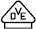
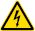
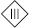
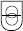
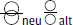
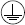
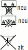
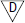
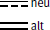
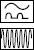
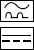
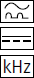
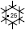
| GS-Prüfzeichen, z. B. DGUV Test | |
| EG-Konformitätszeichen (CE-Kennzeichnung) | |
 |
Prüfzeichen des VDE Prüf- und Zertifizierungsinstitutes |
| VDE-Harmonisierungskennzeichen für Kabel und Leitungen | |
 |
Gefährliche elektrische Spannung |
| Doppelte oder verstärkte Isolierung (Schutzklasse II) | |
 |
Schutzkleinspannung (Schutzklasse III) |
 |
Sicherheitstransformator |
 |
Trenntransformator |
| Leuchten für rauen Betrieb | |
| Steckvorrichtung für erschwerte Bedingungen | |
| Potentialausgleich | |
 |
Schutzleiteranschluss |
| Explositionsschutzkennzeichnung (ATEX-Richtlinie) | |
 |
Nicht zur direkten Befestigung auf normalentflammbaren Oberflächen geeignete Leuchten (nur zur Befestigung auf nicht brennbaren Oberflächen geeignet) |
 |
Leuchte mit begrenzter Oberflächentemperatur nach DIN EN 60598-2-24 (VDE 0711-2-24) |
 |
Gleichspannungsversorgung |
| Wechselspannungsversorgung | |
| Wechselspannungs- und Gleichspannungsversorgung | |
| RCD vom Typ A zum Schutz bei Wechsel- und Pulsfehlerströmen der Netzfrequenz | |
 |
RCD vom Typ F zum Schutz bei Wechsel- und Pulsfehlerströmen der Netzfrequenz und bei Fehlerströmen mit Mischfrequenzen abweichend von der Netzfrequenz |
 |
RCD vom Typ B zum Schutz bei Wechsel- und Pulsfehlerströmen der Netzfrequenz sowie glatten Gleich- und Wechselfehlerströmen bis mindestens 1 kHz |
 |
RCD vom Typ B+ für den gehobenen vorbeugenden Brandschutz zum Schutz bei Wechsel- und Pulsfehlerströmen der Netzfrequenz sowie glatten Gleich- und Wechselfehlerströmen bis 20 kHz |
 |
RCD zum Einsatz bei tiefen Temperaturen |